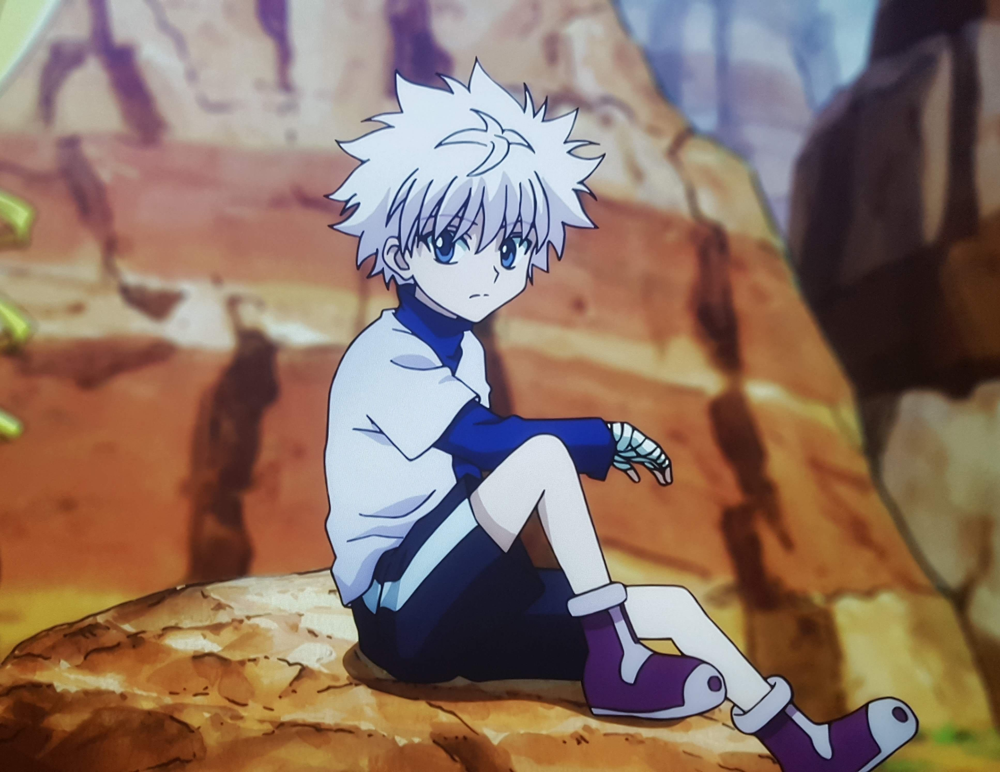
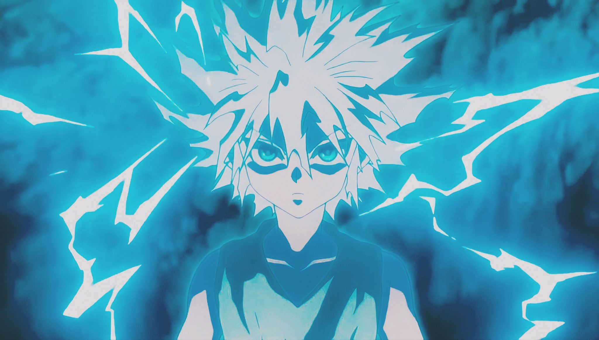
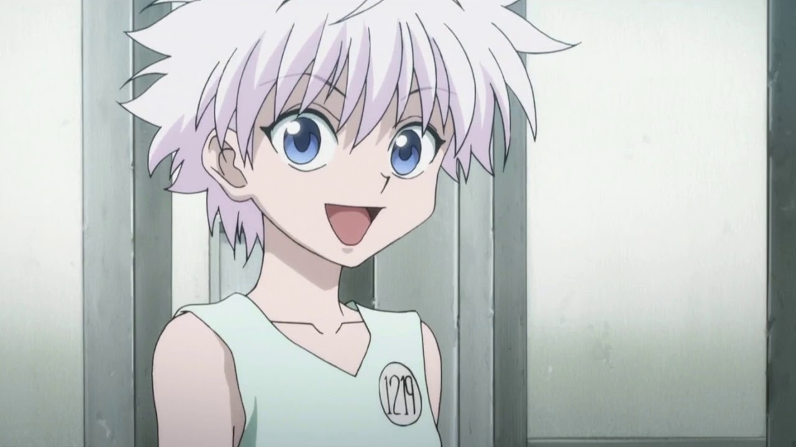
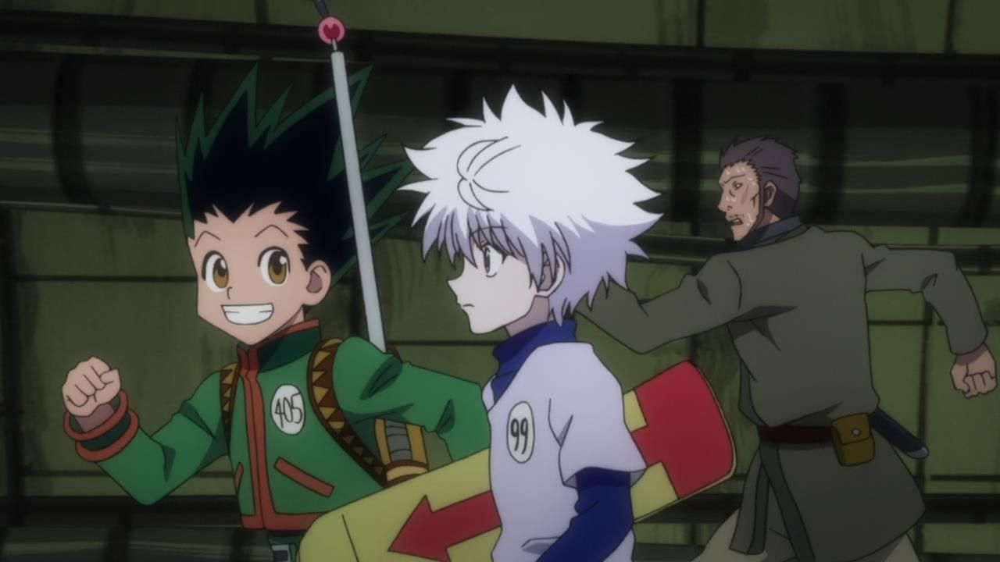

Киллуа - это маленький, светловолосый мальчик, который обладает невероятной силой.
Киллуа умеет управлять электрическим током и имеет способности, связанные с ним.
Киллуа Золдик - это полное имя нашего персонажа. Киллуа родился в семье наёмных убийц и с самого детства он тренировался, чтобы в процессе жизни стать хорошим наёмным убийцей и последовать своему родству. Вся его семья была и является самой прославленной группировкой людей, которые являются наёмными убийцами. Но наш персонаж не совсем был заинтересован в деле своей семьи и решил пройти экзамен на Хантера. В скором времени он не пожалел, что принял участие в столь трудном испытании.
Проходя экзамен на Хантера Киллуа заметил одного очень интересного мальчонка - Гона. Во время всего экзамена на Хантера Киллуа и Гон не отходили друг от друга ни на шаг и преодолевали все препятсвтия вместе.
